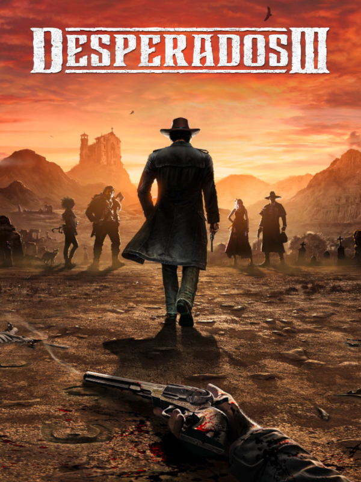

Desperados III
Desperados III
Details
|  | |
| Playtime | Not Played |
| Last Activity | Never |
| Added | 07/10/2025 16:33:22 |
| Modified | 07/10/2025 16:34:13 |
| Completion Status | Not Played |
| Library | Steam |
| Source | Steam |
| Platform | PC (Windows) |
| Release Date | 16/06/2020 |
| Community Score | 86 |
| Critic Score | 86 |
| User Score | |
| Genre | Real Time Strategy (RTS) Simulator Strategy Tactical |
| Developer | Mimimi Games |
| Publisher | THQ Nordic |
| Feature | Single Player |
| Links | Official Website Steam GOG Epic YouTube Discord Twitch Playstation Bluesky |
| Tag | |
Description
Desperados III is a story-driven, hardcore tactical stealth game, set in a ruthless Wild West scenario.
In this long-awaited prequel to the beloved classic Desperados: Wanted Dead or Alive, John Cooper will join forces with the runaway bride Kate, the shady hitman Doc McCoy, the giant trapper Hector, and Isabelle, a mysterious lady from New Orleans. On Cooper’s quest for redemption, his adventures lead him and his gang from rural towns, over swamps and riverbanks, and finally to a dramatic showdown worthy of Wild West legends.
Play smart if you want to succeed. A good plan can make the difference between survival and finding yourself at the business end of a pistol.
Drifter, gunslinger, and natural leader Cooper can kill quietly with a knife, or take out multiple foes with his revolvers. Strongman Hector carries a giant bear trap and can slay the toughest opponents with his trusty axe. Cold blooded bounty hunter McCoy likes to be methodical, using lures, knockout gas, poison syringes and a custom long-range pistol. Kate can fool almost any man with the right outfit, and kills discreetly with her hidden gun. And then there is this mysterious woman from New Orleans, Isabelle…
Combine your team’s special skills to overcome each tough challenge in your own style.
In this long-awaited prequel to the beloved classic Desperados: Wanted Dead or Alive, John Cooper will join forces with the runaway bride Kate, the shady hitman Doc McCoy, the giant trapper Hector, and Isabelle, a mysterious lady from New Orleans. On Cooper’s quest for redemption, his adventures lead him and his gang from rural towns, over swamps and riverbanks, and finally to a dramatic showdown worthy of Wild West legends.
Play smart if you want to succeed. A good plan can make the difference between survival and finding yourself at the business end of a pistol.
Drifter, gunslinger, and natural leader Cooper can kill quietly with a knife, or take out multiple foes with his revolvers. Strongman Hector carries a giant bear trap and can slay the toughest opponents with his trusty axe. Cold blooded bounty hunter McCoy likes to be methodical, using lures, knockout gas, poison syringes and a custom long-range pistol. Kate can fool almost any man with the right outfit, and kills discreetly with her hidden gun. And then there is this mysterious woman from New Orleans, Isabelle…
Combine your team’s special skills to overcome each tough challenge in your own style.
- Play five unique characters, each with a very particular set of skills
- Experience true freedom of choice with countless different ways to overcome any obstacle
- Defeat large groups of enemies with careful planning and execution
- Witness the glory of classic Wild West scenarios like frontier towns, mysterious swamps, sprawling modern cities, and many more
- Choose between non-lethal and deadly attacks, stealth and blazing guns
- Adjust the game to your playstyle with various difficulty settings and special replay challenges
- The Showdown mode allows you to pause the game anytime and react to ambushes or surprise attacks